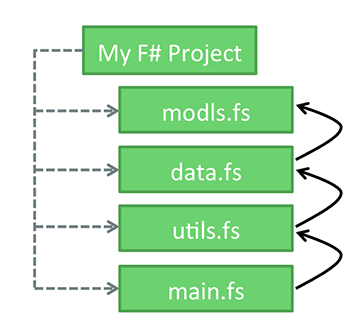
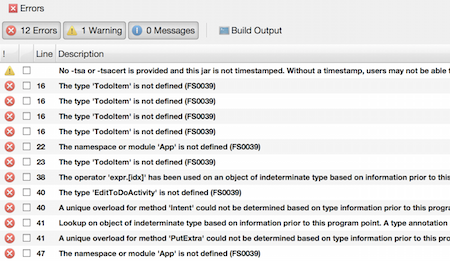
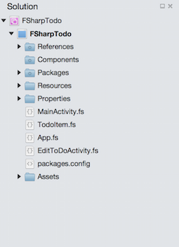

Duration
10 minutes
Prerequisites
Visual Studio 2017 requires a few F# components be installed to work with and create the F# projects used in these exercises. These components can be added by running the Visual Studio Installer found in the Windows Start menu.
If you have installed the .NET desktop development workload, you will already have the F# language support component. To create new F# projects using .NET Core, you will also need the .NET Core cross-platform development workload. To create new F# projects using the .NET Framework instead, you will need the F# desktop language support component as well.
Lab goals
The primary goal of this lab is to gain a deeper understanding of how to organize code files in F#. The high level goals of this activity are as follows:
- Open the FSharpToDo Android application located in the Exercise 1 -> Start folder. Attempt to run the application and inspect the errors; these are a result of the files being misordered.
- Reorder the files one at a time and compile the application after each move. You will notice that when files are misordered there will be a cascade effect on the errors. This is due to the dependencies the files have on one another. It is important to move a file, run the application, and repeat.
- You've completed the exercise when the app successfully compiles.

Required assets
There are two F# projects in the Lab 01 Resources folder, one is the starting solution you will work to reorder, and the second is a completed version of the program you can refer to at the end of the exercise to check your work. Please make sure you have this folder before you begin.
Steps
Reorder the files in the FSharpToDo app
Our goal is to make this app run successfully on an Android simulator or device
- Locate the starter project contained in the Lab 01 Resources/Start folder included with this exercise and open the FSharpTodo.sln file using Visual Studio.
- Run the app
- Make sure Visual Studio is set to "Debug" and open on an Android Player or a connected device.
- After compiling the project click inspect the Errors window to view the build errors.
- You will note a number of errors, look for errors, which state things like "The type... is not defined", that will help clue you into which files need to be moved.
To move a file you can click and drag it. To move a file, select it and use Alt+Up arrow and Alt+Down arrow.
 - Repeat step 3 until the app compiles and runs correctly.
You will know you have completed the activity when the app runs in an emulator or on a device. If you are unable to make it run please refer to the Lab 01 Resources/Complete folder to see the solution.
Summary
During this lab you have worked to gain a deeper understanding of file organization in F#. We reordered the files in an F# project to make an Android project compile successfully.